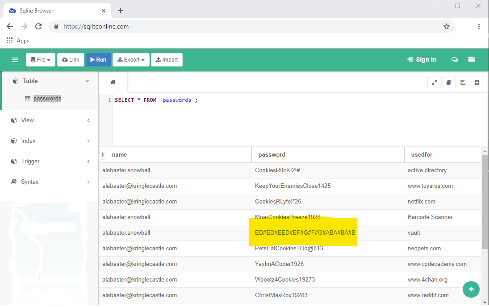

Question 12: Recover Alabaster’s Password¶
Answer: ED#ED#EED#EF#G#F#G#ABA#BA#B
Solution¶
Our approach towards this challenge consisted of analysing the wannacookie code (written in PowerShell) and then using this to try to decrypt the password database.
Note
In this challenge we will utilise the wannacookie.ps1 code instead of the wannacookie.min.ps1 code.
The next step is to try and work out what type of file the alabaster_passwords.elfdb is. We found the simplest way to work this out was to open the file in a text editor and look at the initial characters. This provides the string SQLite format 3.
Note
A quick examination of the file using a text editor revealed a couple of passwords but the parts of the file that were important consisted of binary data.
We didn’t have SQLite handily available so we simply opened the file in an online SQLite application.
The database showing the contents of the passwords table is shown in the following figure. The password for the vault has been highlighted.
Note
We tried using the passwords with online services such as NetFlix, but found out that the accounts did not exist. Perhaps Santa has his own regionalised versions of these online services.